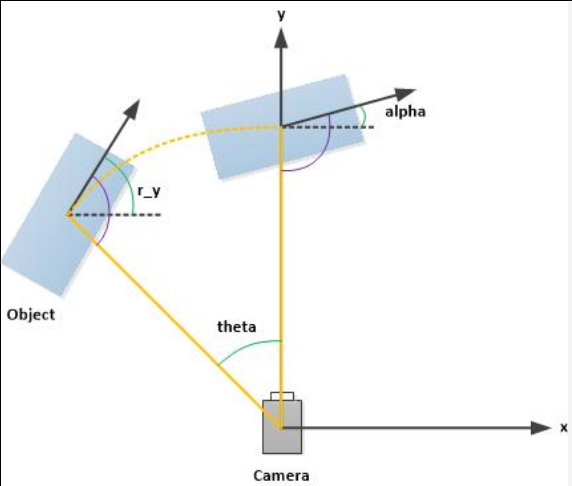
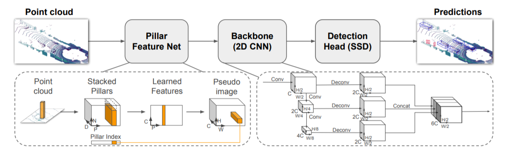

Point Pillars
Table of Contents
1. Point Pillars
PointPillars: Fast Encoders for Object Detection from Point Clouds 2019/5
1.1. kitti dataset
http://www.cvlibs.net/datasets/kitti/
https://github.com/kuixu/kitti_object_vis
kitti 包含了立体图像 (stereo), 光流 (flow), 视觉测距 (odometry) 和 3d 物体检测 (3d object) 等多种数据. 其中 3d object 主要包含了:
- velodyne: velodyne 点云数据
- image_2: 对应的图片
- calib_2: lidar, camera 和 imu 的 calib 数据
- label_2: 标签
1.1.1. velodyne
velody 数据放在 velodyne/xxx.bin 中, 由 N*4 个浮点数组成, 表示 N 个点的(x, y, z, r), 其中 r 指反射强度 (reflectance/intensity)
1.1.2. label_2
label_2/000000.txt:
# class truncated 遮挡 alpha 2d bbox(像素) 长宽高(米) 物体的位置 rotation_y Pedestrian 0.00 0 -0.20 712.40 143.00 810.73 307.92 1.89 0.48 1.20 1.84 1.47 8.41 0.01
其中 alpha 和 rotation_y 如下图所示:

1.2. pillar
在 PointPillars 之前, 存在多种 3d object detection 网络, 主要分为两类:
- 直接使用 conv3d, 但这种方法的计算量很大
- 把 point cloud 映射到 2d 空间 (例如通过 bev (bird eye view, 俯视图) 投影到 x-y 平面), 然后进行人工的特征提取 (例如统计 z 方向上 z 或 r 的最大值), 最后用 conv2d 当做图片来处理. 例如: Multi-View 3D Object Detection Network, apollo 中的 cnnseg 用的就是和 mv3d 类似的思想
为了避免手工特征提取, 有两种新的网络:
- PointNet (https://arxiv.org/pdf/1612.00593.pdf 2017/4)
- VoxelNet (https://arxiv.org/pdf/1711.06396.pdf 2017/11)
其中 PointNet 的思想是:
假设投影到 x-y 平面后 z 方向上有 N 个 feature (N 通常较小), 直接用 max 函数会导致较多的信息丢失, 那不如先对这 N 个 feature 做一个变换 (例如通过一个 mlp), 变成 M 个 feature (M 会很大), 再做 max 则可以损失较少的信息
PointPillars 和 VoxelNet 都参考了 PointNet 的思想, 不同的是:
- VoxelNet 使用 voxel 来聚合点云, 它的 feature extractor 得到 3d 的 feature: (H, W, D, C), 后续需要用 conv3d 来处理
- PointPillars 使用 pillar 来聚合点云, 它的 feature extractor 得到 2d 的 feature: (H, W, C), 后续用 conv2d 来处理
PointPillars 会先把输入的点云数据转换为 (P, N, D), 其中:
- P 表示把 x-y 平面分成多少个 pillar (柱子)
N 表示每个 pillar 有多少个点
如果某个 pillar 实际的点数超过 N, 则随机 sample N 个, 如果不足 N 个, 则填充 0, 目的是变成定长, 以便后续处理
D 表示每个点的 feature 个数
这里的 feature 是原始的 feature, 例如 z, r 等, 不需要做人工的特征提取
在后续的 pfe (pillar feature extractor) 中:
- (P, N, D) 先通过一个 conv2d 变成 (P ,N, C) (D 相当于 PointNet 中那个较小的 N, C 相当于那个较大的 M),
- 再针对 N 这一维进行 max 操作, 得到 (P, C)
- 最后通过一个 scatter 操作把 P 还原成二维的 (H, W), 得到 (H, W, C), 做为伪图像交给后续的 2d object detector 去处理
Backlinks
MobileNetV2 (MobileNet > MobileNetV2 > Linear Bottleneck): 这个做法和 PointNet 处理 pooling 的作法类似?
1.3. label
label 分为三部分:
- pillars
- indices
- rpn groud truth
1.3.1. pillars
pillars 是根据原始点云数据生成的 pillars, shape 为 (P, N, D)
生成 pillars 的过程大致是:
- 先确定要处理的点云的范围, 例如, x 属于 (0, 80m), y 属于 (-40m, 40m), …, 过滤掉不需要关注的点
- 点云量化为最终需要生成的伪图像的尺寸, 例如 (504*504)
- 统计 504*504 的 grid 上每个像素对应的 voxel
- 从 504*504 个点中随机选择 P 个做为 pillar (例如 12000) 个, 同时记录下 P 和伪图像上 (H,W) 的对应关系, 做为后面需要用到的 indices
- 针对每个 pillar 随机选择 N 个 voxel
1.3.2. indices
indices 是生成 pillars 同时生成的 indice, shape 为 (P, 2), 表示 scatter_nd 时 P 与 (H, W) 的对应关系
1.3.3. rpn ground truth
与 ssd 的 assign label 过程类似: 需要生成 anchor box (例如 252*252*4 个) , 每个 anchor box 通过与 gt_box 的 iou 对比决定是否需要把 gt_box 的真值赋予 anchor box: occupancy, position, size, angle, heading
1.4. network

PointPillars 分成三部分:
- pillar feature extractor (pfe)
- scatter
- rpn
- detection backbone
- detection head
1.4.1. pfe
pillars/input (InputLayer) [(1, 12000, 100, 7)] 0 __________________________________________________________________________________________________ pillars/conv2d (Conv2D) (1, 12000, 100, 64) 448 pillars/input[0][0] __________________________________________________________________________________________________ pillars/batchnorm (BatchNormali (1, 12000, 100, 64) 256 pillars/conv2d[0][0] __________________________________________________________________________________________________ pillars/relu (Activation) (1, 12000, 100, 64) 0 pillars/batchnorm[0][0] __________________________________________________________________________________________________ pillars/maxpooling2d (MaxPoolin (1, 12000, 1, 64) 0 pillars/relu[0][0] __________________________________________________________________________________________________ pillars/reshape (Reshape) (1, 12000, 64) 0 pillars/maxpooling2d[0][0]
1.4.1.1. input
input 是 (12000, 100, 7), 表示:
- 12000 个 pillar, 相当于论文中的 P
- 每个 pillar 有 100 个 voxel, 相当于论文中的 N
- 每个 voxel 有 7 个 feature (x,y,z,reflect…), 相当于论文中的 D
1.4.1.2. conv2d
把 7 变成 64, 相当于论文中的 D 变成 C
1.4.1.3. maxpooling2d
这里的 maxpooling2d 实际上相当于 max(axis=2), 去掉了 N 这一维
1.4.1.4. reshape
reshape 后数据变成 (12000, 64), 即 (P, C), 相当于论文中的 Learned Features
1.4.2. scatter
pillars/scatter_nd (Lambda) (1, 504, 504, 64) 0
scatter 是为了把 (P, C) 变成 (H, W, C), 它的输出对应论文中的 Pseudo Image
scatter/gather 的概念在各个不同领域都有应用:
- gather 是指从不同的位置获得数据
- scatter 是指把数据分散到不同的位置
例如:
linux 的 scather/gather IO
writev 相当于 gather
struct iovec iov[2]; iov[0].iov_base = x; iov[0].iov_len = lx; iov[1].iov_base = y; iov[1].iov_len = ly; writev(fd, iov, 2);
readv 相当于 scatter
struct iovec iov[2]; iov[0].iov_base = x; iov[0].iov_len = lx; iov[1].iov_base = y; iov[1].iov_len = ly; readv(fd, iov, 2);
dma
scatter/gather dma 与 linux scather/gather IO 原理上是一样的, 都是为了解决 source/dest 不连续时如何高效的复制的问题
numpy
b=a[(x,y)] 相当于 gather
a[(x,y)]=b 相当于 scatter
1.4.3. rpn
rpn 用来在 pseudo image 上检测物体, 具体对可以分为两部分:
- backbone
- detection head
标准 ssd 可以看做 backbone 和 detection head 是放在一起的, 每个 level 的 feature 直接 encode 了 (class, coord).
这里的 rpn 使用了 backbone + detection head 的结构:
- backbone 是一个 Feature Pyramid Networks
- 所有 level 的 feature concat 在一起后再通过多个单独的 conv 生成不同的数据 (class, coord, …), 每个数据对应一个 detection head, 这里的 concat 相当于 `neck`.
通过 backbone + neck + head 的形式, 可以更加灵活的添加新的 detection head
1.4.3.1. backbone
cnn/block1/conv2d0 (Conv2D) (1, 252, 252, 64) 36928 pillars/scatter_nd[0][0]
__________________________________________________________________________________________________
cnn/block1/conv2d1 (Conv2D) (1, 252, 252, 64) 36928 cnn/block1/bn0[0][0]
...
__________________________________________________________________________________________________
cnn/block2/conv2d0 (Conv2D) (1, 126, 126, 128) 73856 cnn/block1/bn3[0][0]
__________________________________________________________________________________________________
cnn/block2/conv2d1 (Conv2D) (1, 126, 126, 128) 147584 cnn/block2/bn0[0][0]
...
__________________________________________________________________________________________________
cnn/block3/conv2d0 (Conv2D) (1, 63, 63, 128) 147584 cnn/block2/bn5[0][0]
__________________________________________________________________________________________________
cnn/block3/conv2d1 (Conv2D) (1, 63, 63, 128) 147584 cnn/block3/bn0[0][0]
...
__________________________________________________________________________________________________
cnn/up1/conv2dt (Conv2DTranspos (1, 252, 252, 128) 73856 cnn/block1/bn3[0][0]
__________________________________________________________________________________________________
cnn/up2/conv2dt (Conv2DTranspos (1, 252, 252, 128) 147584 cnn/block2/bn5[0][0]
__________________________________________________________________________________________________
cnn/up3/conv2dt (Conv2DTranspos (1, 252, 252, 128) 147584 cnn/block3/bn5[0][0]
__________________________________________________________________________________________________
cnn/concatenate (Concatenate) (1, 252, 252, 384) 0 cnn/up1/bn0[0][0]
cnn/up2/bn0[0][0]
cnn/up3/bn0[0][0]
1.4.3.2. detection head
loc/conv2d (Conv2D) (1, 252, 252, 12) 4620 cnn/concatenate[0][0] __________________________________________________________________________________________________ size/conv2d (Conv2D) (1, 252, 252, 12) 4620 cnn/concatenate[0][0] __________________________________________________________________________________________________ clf/conv2d (Conv2D) (1, 252, 252, 16) 6160 cnn/concatenate[0][0] __________________________________________________________________________________________________ occupancy/conv2d (Conv2D) (1, 252, 252, 4) 1540 cnn/concatenate[0][0] __________________________________________________________________________________________________ angle/conv2d (Conv2D) (1, 252, 252, 4) 1540 cnn/concatenate[0][0] __________________________________________________________________________________________________ heading/conv2d (Conv2D) (1, 252, 252, 4) 1540 cnn/concatenate[0][0] __________________________________________________________________________________________________ loc/reshape (Reshape) (1, 252, 252, 4, 3) 0 loc/conv2d[0][0] __________________________________________________________________________________________________ size/reshape (Reshape) (1, 252, 252, 4, 3) 0 size/conv2d[0][0] __________________________________________________________________________________________________ clf/reshape (Reshape) (1, 252, 252, 4, 4) 0 clf/conv2d[0][0]
共有 6 个 detection head:
loc
(252, 252, 4, 3) 表示 (252, 252, 4) 个 anchor box, 每个 box (3) 个中心点坐标 (x, y, z)
size
(252, 252, 4, 3) 表示 (252, 252, 4) 个 anchor box, 每个 box 的 (lenght, width, height)
clf
(252, 252, 4, 4) 表示 (252, 252, 4) 个 anchor box, 每个 box 的 class confidence (一个 4 个 class: car, pedestrian, cyclist, misc)
occupancy
(252, 252, 4) 表示 (252, 252, 4) 个 anchor box 的 objectness confidence
angle
(252, 252, 4) 表示 (252, 252, 4) 个 anchor box 的 yaw angle
heading
(252, 252, 4) 表示 (252, 252, 4) 个 anchor box 的 heading: 物体是面向你还是背向你?
1.5. inference
inference 时需要先转换为 pillar, inference 结束后需要 NMS, 两个都比较耗时.
1.6. loss
与 ssd 类似, PointPillars 的 loss 也是各个 detection head 的输出的 loss 之和, 且大部分 loss 计算时需要考虑 objectness 的 ground truth 是否为真, 因为只有 objectness 为真的 anchor box 才需要考虑它的 loc loss, class loss…
但是在处理 objectness 的 loss (这里是 occupancy 的 loss) 时, 需要考虑正负样本的平衡问题. ssd 使用的是 hard negative mining, 而 PointPillars 使用了 focal loss
1.6.1. focal loss
focal loss (https://arxiv.org/pdf/1708.02002.pdf) 是 RetinaNet 中用来解决正负样本不平衡的方法
正常的 bce loss 为:
\(\mathcal{L}=\begin{cases} -log(p)& y=1\\ -log(1-p)& y=0 \\ \end{cases}\)
简单起见, 定义:
\(p_t=\begin{cases} p& y=1\\ 1-p& y=0 \\ \end{cases}\)
\(\alpha_t=\begin{cases} \alpha& y=1\\ 1-\alpha& y=0 \\ \end{cases}\)
正常的 bce loss 为:
\(\mathcal{L}=-log(p_t)\)
focal loss 为:
\(\mathcal{L}=-\alpha_t(1-p_t)^{\gamma}log(p_t)\)
其中 \(\alpha, \gamma\) 是预定义的常量, \(\alpha\) 默认为 0.25, \(\gamma\) 默认为 2
1.6.1.1. \(\gamma\) 调节 容易/困难 样本的权重
当 \(p_t\) 较大(接近 1)时, 说明处理的是容易的样本, loss 会乘以一个非常小的 \((1-p_t)^\gamma\),导致 loss 变得很小
当 \(p_t\) 较小(接近 0)时, 说明处理的是困难的样本, loss 会乘以一个大一些的的 \((1-p_t)^\gamma\), 导致 loss 不会变得很小
1.6.1.2. \(\alpha\) 调用正负样本的权重
按照直觉, \(\alpha\) 是用来调节正负样本比例的, 例如 \(\alpha = 0.75\) 表示正样本的 loss 会有一个 0.75 的权重, 而负样本 loss 权重为 0.25, 但实际实验的结果表明 \(\alpha\) 在调节正负样比例方面用处不大…可能是由于大量负样本通常也是容易的样本, 所以通过 \(\gamma\) 就可以达到目的
Backlinks
Object Detection (Object Detection > Point Pillars): Point Pillars